Harmonização de Vinhos
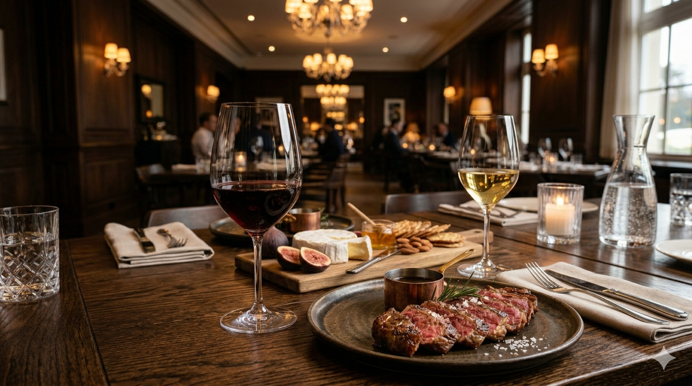
Vinhos Tintos
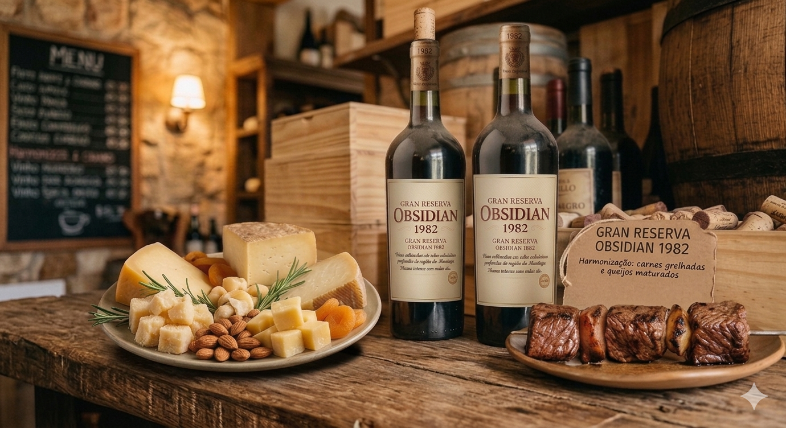
Gran Reserva Obsidian 1982
Harmonização: carnes grelhadas e queijos maturados
O solo vulcânico traz intensidade e calor ao vinho, que combina com alimentos gordurosos, equilibrando o sabor marcante.
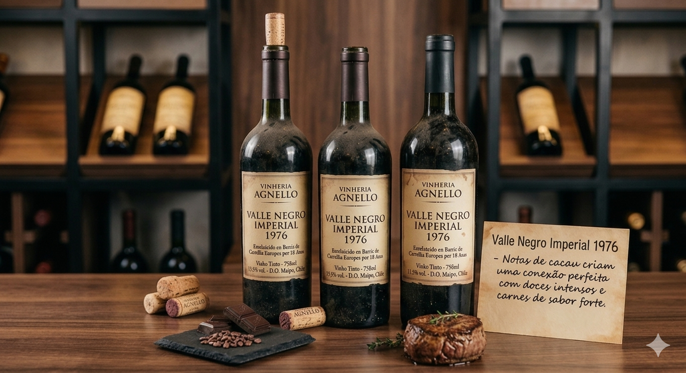
Valle Negro Imperial 1976
Harmonização: chocolate amargo e carnes assadas
Notas de cacau criam uma conexão perfeita com doces intensos e carnes de sabor forte.
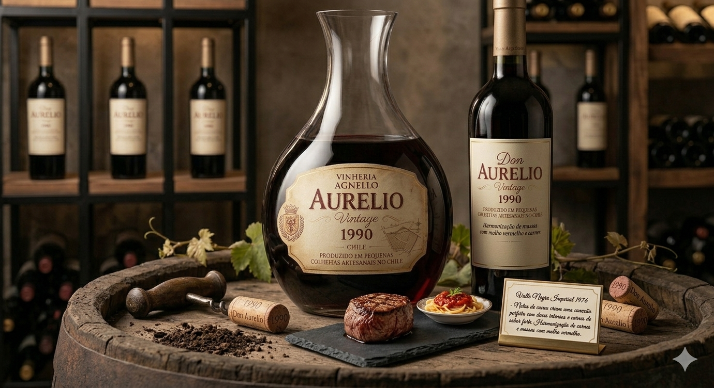
Don Aurelio Vintage 1990
Harmonização: massas com molho vermelho e carnes
Sua textura aveludada complementa pratos ricos e encorpados.
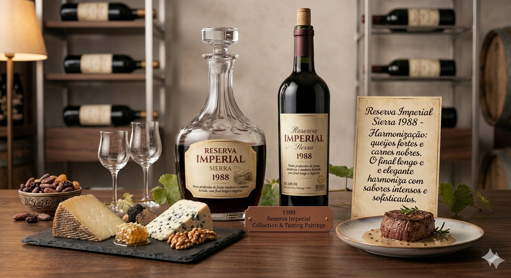
Reserva Imperial Sierra 1988
Harmonização: queijos fortes e carnes nobres
O final longo e elegante harmoniza com sabores intensos e sofisticados.
Vinhos Brancos
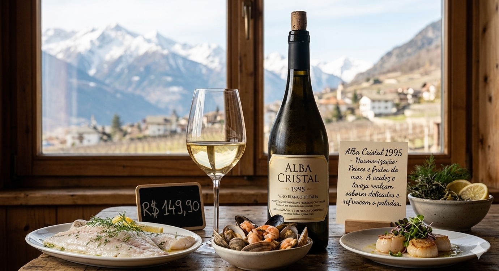
Alba Cristal 1995
Harmonização: peixes e frutos do mar
A acidez e leveza realçam sabores delicados e refrescam o paladar.
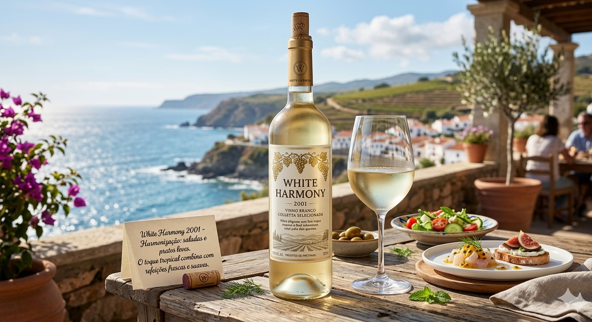
White Harmony 2001
Harmonização: saladas e pratos leves
O toque tropical combina com refeições frescas e suaves.
Vinhos Rosé
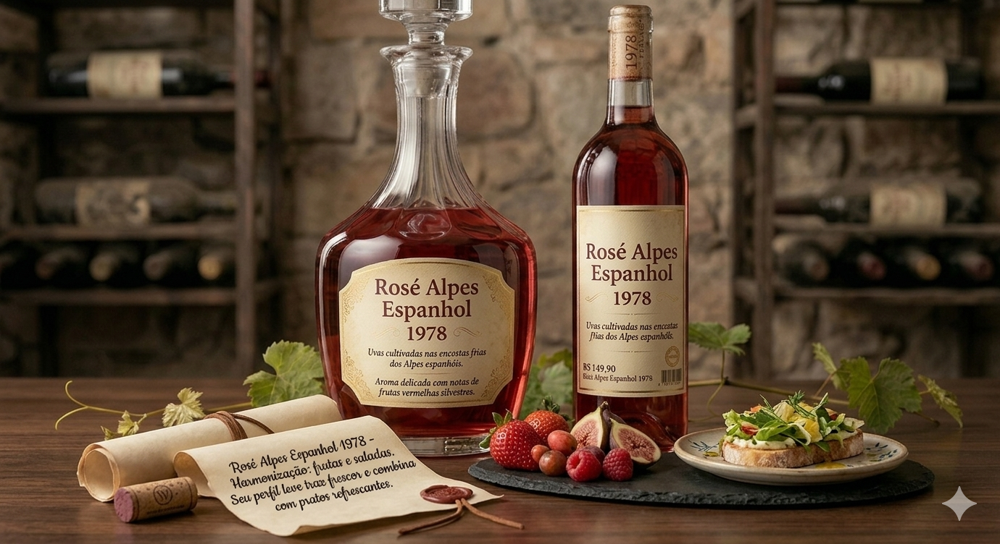
Rosé Alpes Espanhol 1978
Harmonização: frutas e saladas
Seu perfil leve traz frescor e combina com pratos refrescantes.
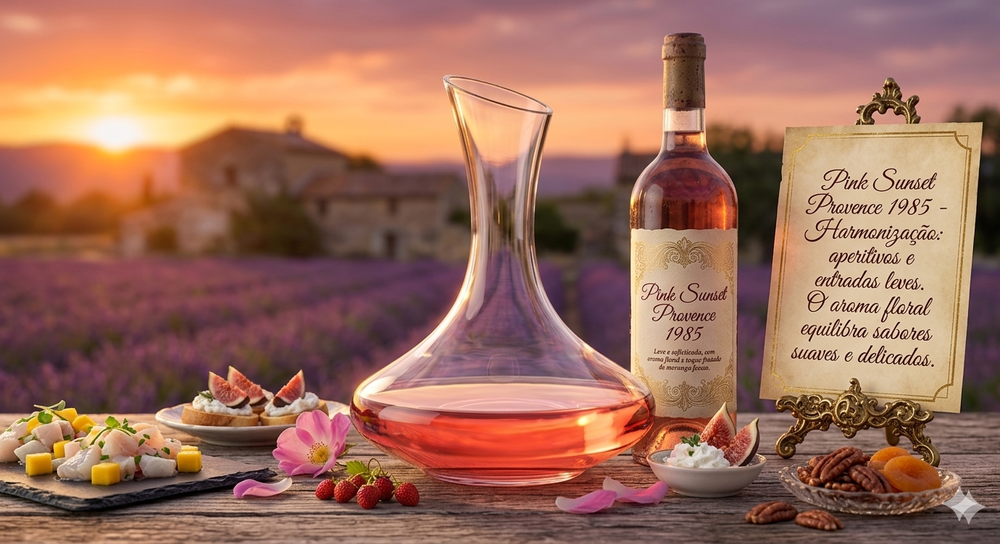
Pink Sunset Provence 1985
Harmonização: aperitivos e entradas leves
O aroma floral equilibra sabores suaves e delicados.
Vinhos Suaves
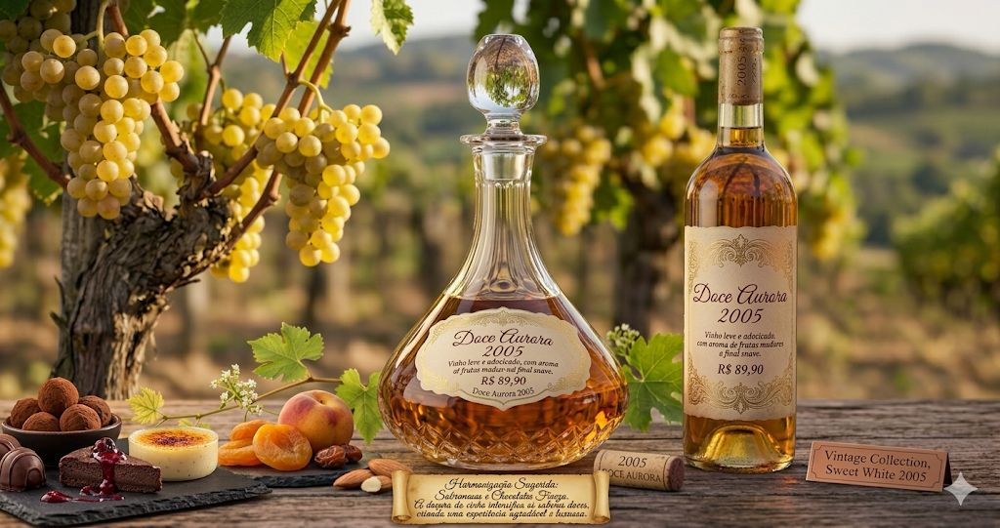
Doce Aurora 2005
Harmonização: sobremesas e chocolate
A doçura intensifica sabores doces e cria uma experiência agradável.
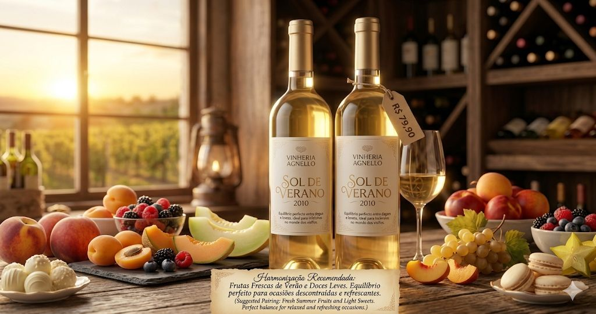
Sol de Verano 2010
Harmonização: frutas e momentos leves
Equilíbrio perfeito para ocasiões descontraídas e refrescantes.